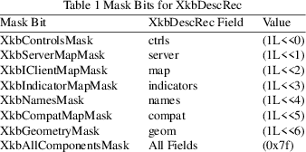

XkbSetAccessXTimeout − Configures the AccessXTimeout options for a keyboard device
|
Bool XkbSetAccessXTimeout |
(Display *display, unsigned int device_spec, |
unsigned short timeout, unsigned int ctrls_mask, unsigned int ctrls_values, unsigned short opts_mask, unsigned short opts_values);
display
connection to X server
device_spec
device to configure, or XkbUseCoreKbd
timeout
seconds idle until AccessXTimeout occurs
ctrls_mask
boolean controls to modify
ctrls_values
new bits for controls selected by ctrls_mask
opts_mask
ax_options to change
opts_values
new bits for ax_options selected by opts_mask
In environments where computers are shared, features such as SlowKeys present a problem: if SlowKeys is on, the keyboard can appear to be unresponsive because keys are not accepted until they are held for a certain period of time. To help solve this problem, Xkb provides an AccessXTimeout control to automatically change the enabled/disabled state of any boolean controls and to change the value of the AccessXKeys and AccessXFeedback control attributes if the keyboard is idle for a specified period of time.
When a timeout as specified by AccessXTimeout occurs and a control is consequently modified, Xkb generates an XkbControlsNotify event. For more information on XkbControlsNotify events.
timeout
specifies the number of seconds the keyboard must be idle
before the controls are modified. ctrls_mask
specifies what controls are to be enabled or disabled, and
ctrls_values specifies whether those controls are to
be enabled or disabled. The bit values correspond to those
for enabling and disabling boolean controls using
XkbChangeEnabledControls.
The opts_mask field specifies which attributes of the
AccessXKeys and AccessXFeedback controls are to be changed,
and opts_values specifies the new values for those
options. The bit values correspond to those for the
ax_options field of an XkbDescRec.
XkbSetAccessXTimeout sends a request to configure the AccessXTimeout control to the server. It does not wait for a reply, and normally returns True. If a compatible version of the Xkb extension is not available in the server, XkbSetAccessXTimeout returns False.
|
True |
The XkbSetAccessXTimeout function returns True when a compatible version of the Xkb extension is available in the server. | ||
|
False |
The XkbSetAccessXTimeout function returns False when a compatible version of the Xkb extension is not available in the server. |
The complete description of an Xkb keyboard is given by an XkbDescRec. The component structures in the XkbDescRec represent the major Xkb components.
typedef struct
{
struct _XDisplay * display; /* connection to X server */
unsigned short flags; /* private to Xkb, do not modify */
unsigned short device_spec; /* device of interest */
KeyCode min_key_code; /* minimum keycode for device */
KeyCode max_key_code; /* maximum keycode for device */
XkbControlsPtr ctrls; /* controls */
XkbServerMapPtr server; /* server keymap */
XkbClientMapPtr map; /* client keymap */
XkbIndicatorPtr indicators; /* indicator map */
XkbNamesPtr names; /* names for all components */
XkbCompatMapPtr compat; /* compatibility map */
XkbGeometryPtr geom; /* physical geometry of keyboard */
} XkbDescRec, *XkbDescPtr;
The display field points to an X display structure. The flags field is private to the library: modifying flags may yield unpredictable results. The device_spec field specifies the device identifier of the keyboard input device, or XkbUseCoreKeyboard, which specifies the core keyboard device. The min_key_code and max_key_code fields specify the least and greatest keycode that can be returned by the keyboard.
Each structure component has a corresponding mask bit that is used in function calls to indicate that the structure should be manipulated in some manner, such as allocating it or freeing it. These masks and their relationships to the fields in the XkbDescRec are shown in Table 1.

The structure for the XkbControlsNotify event is defined as follows:
typedef struct
{
int type; /* Xkb extension base event code */
unsigned long serial; /* X server serial number for event */
Bool send_event; /* True => synthetically generated */
Display * display; /* server connection where event
generated */
Time time; /* server time when event generated */
int xkb_type; /* XkbCompatMapNotify */
int device; /* Xkb device ID, will not be XkbUseCoreKbd */
unsigned int changed_ctrls; /* bits indicating which
controls data have changed*/
unsigned int enabled_ctrls; /* controls currently enabled in
server */
unsigned int enabled_ctrl_changes; /* bits indicating
enabled/disabled controls */
int num_groups; /* current number of keyboard groups */
KeyCode keycode; /* != 0 => keycode of key causing change
*/
char event_type; /* Type of event causing change */
char req_major; /* major event code of event causing change
*/
char req_minor; /* minor event code of event causing change
*/
} XkbControlsNotifyEvent;
XkbChangeEnabledControls(3)